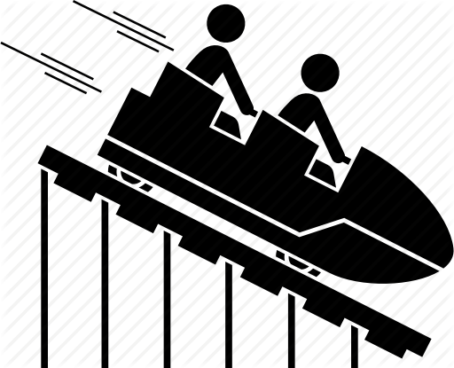
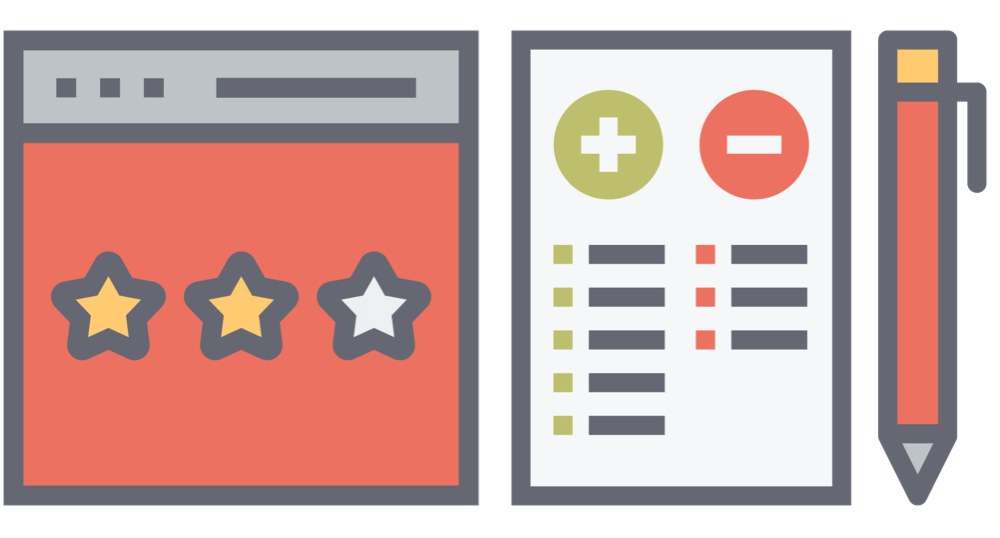
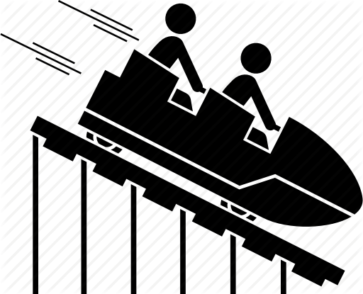
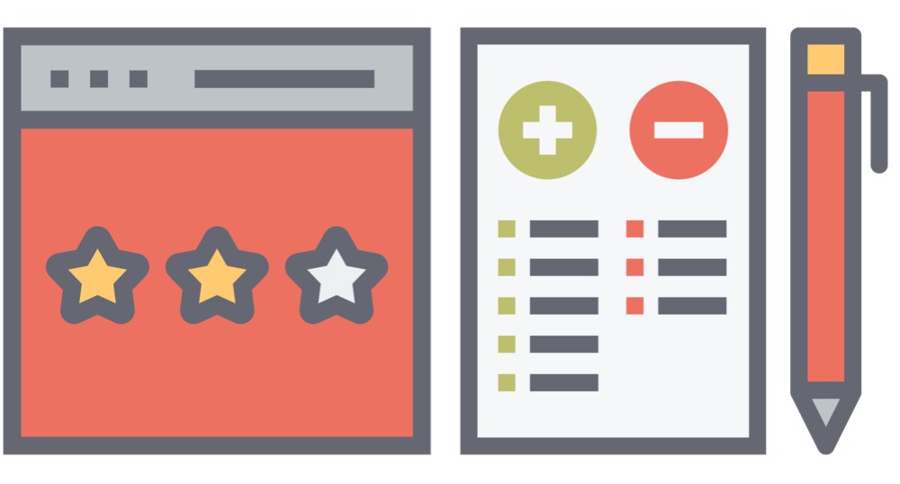

First Half of USERDES
August 23, 2019
 

The first half of USERDES class is like a roller coaster. I can say that it feels like a roller coaster because there are times that we are chill in this subject and there are times that we need to stay up all night just to finish something that is required to be pass in the morning because we are or most of us loves to cram. Moreover, riding a roller coaster it's not just about fear or worst feeling but it also gives us happiness, just like in USERDES class I was so frustrated the night before the presentation of our initial prototype because I am the one who is tasked to make the prototype but then it was so difficult, I nearly cry because of it. But when I finished the prototype it gives me the feeling of happiness because despite of doing it in the most limited time, still I finished it and I still have 2 hours left to sleep.
Even though it was like roller coaster, still this subject lessens our burden because miss Jen does not give examinations that gives us time to review or study for our other subjects. One thing that I expect for the other half of USERDES class is that I will learn how to animate using HTML, CSS, and JavaScript because in my web application there are animation there but I do not create it with myself. I hope I might be able to learn how to do it so that next time I will not going to use a framework or template for my own web application.
Reflectionns
R1: First Week of USERDES Class
R2: Need Finding and Paper Prototyping
R3: First Web Application using Github and Heroku
R4: Userinyerface - Worst UI Practice
R5: SoCIT Fest